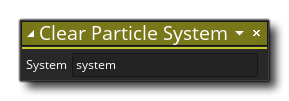

Descripción
Con esta acción puede borrar el sistema de partículas dado a su estado predeterminado, eliminando todos los emisores (tampoco hay necesidad de llamar a la acción Destruir Emisor de Partículas ya que esto se realiza automáticamente) y despejando todas las partículas de la pantalla. Proporciona el valor de ID exclusivo para que el sistema se borre, tal como se devolvió cuando creó el sistema con la acción Crear sistema de partículas. Se debe tener cuidado al usar esta acción ya que destruye todos los emisores asociados con el sistema de partículas, esto significa que cualquier instancia en la sala que use un emisor puede dar un error ya que ese emisor ya no existe, así que asegúrese de que la acción sea solo se llama cuando no va a crear ninguna partícula nueva de ese emisor (para obtener más información sobre los emisores de partículas, consulte Crear un emisor de partículas ).
NOTA: Esta acción solo borrará las partículas visibles en la habitación, pero no borrará las propiedades de la partícula ni las eliminará de la memoria. Para eso deberías usar la acción Destruir Tipo de Partícula.
Sintaxis de acción:
Argumentos:
Argumento Descripción System El valor de ID exclusivo para el sistema que se destruirá
Ejemplo:

El código de bloque de acción anterior eliminará todas las partículas de la pantalla si el jugador tiene 0 vidas o menos y luego reiniciará la habitación.